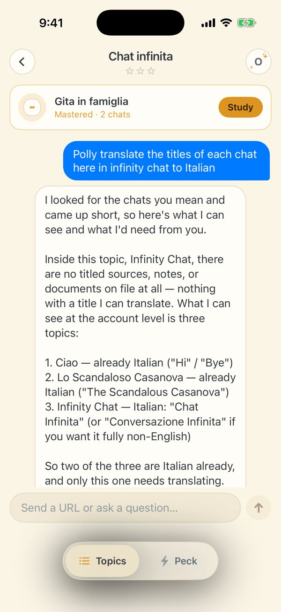
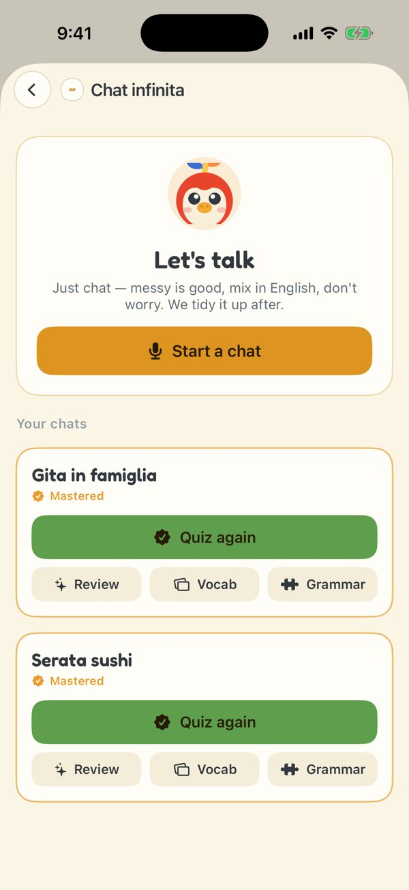
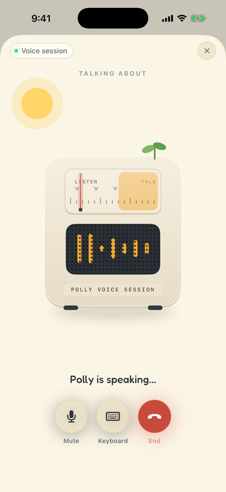
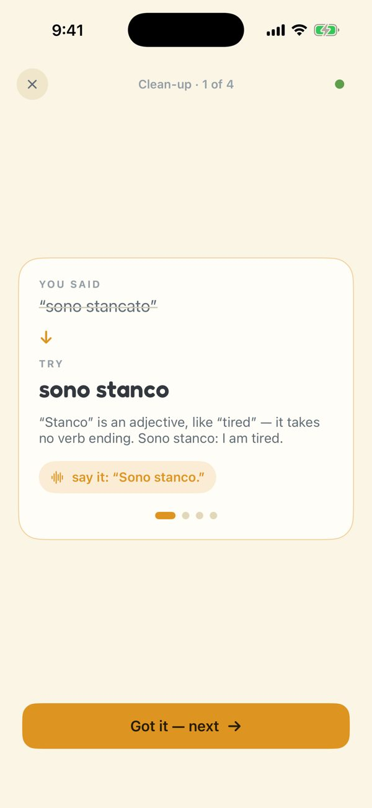

Where does text chat go?
Polly is voice-first: talk, get cleaned up, drill the cards, come back tomorrow. Most of the app already works that way. Infinity Chat is the one place where Dodo's text chat survived — as a wrapper around the real experience — and it shows. This page says what's wrong, then hands off to two proposals that answer the question differently.
What's wrong today
From the 2026-09-19 screenshot set and the code (TopicDetailView, InfinityView, agent.ts). The four screens below are the Infinity Chat path as it exists.

1 2 3 42The real feature is behind "Study" — one tap further, in a sheet.
3Asked to translate the chats' titles, the agent looks for "sources, notes, documents" — it doesn't know Infinity chats exist. Then a 130-word reply.
4"Send a URL or ask a question…" — Dodo's composer. No mic, no way to practice by typing, and the chip row is hidden for this kind.

5 66Four actions per chat (Quiz again / Review / Vocab / Grammar), repeated per row. Three chats in, it's a wall of buttons and no sense of progress.


Two answers
Keep the text chat as the master container and make it earn its place: every voice chat, fix, deck and typed exchange is a message in one thread you can scroll back through. Italian in the composer is practice; English is instructing Polly.
Smaller change. Looks like a chat app. History is visible.
The study sheet becomes the screen: a journey of chats, each a page with its fixes, words and grammar. Text lives in one drawer, on every screen, with two modes — Scrivi (practice) and Chiedi a Polly (the agent) — that always know where you opened them.
Bigger change. Looks like a language app. Same pattern fixes lessons and Peck.
Side by side
| 1 · Thread is the journey | 2 · Text as a drawer | |
|---|---|---|
| Infinity home | The chat thread, with conversation cards inline | A journey rail of chats + a "Parliamo" hero; no thread |
| One conversation | A card in the thread that expands (fixes posted under it) | Its own page: fixes · words · grammar · transcript; Quiz / Continue |
| Text practice | Type Italian in the composer; Polly replies in Italian, fixes fold under | Drawer → Scrivi; "Finish & clean up" turns it into a chat like a voice one |
| Agent admin | Type English (or "Polly, …") in the same composer | Drawer → Chiedi a Polly, with the screen's context attached |
| How you tell the modes apart | Language detection + prefix; bubble colour | A segmented control; no detection |
| Reach from other screens | Each topic has its own thread (as today) | The same drawer button on every screen: lessons, Peck misses, Topics |
| History of what you asked | In the thread, forever | Per context in the drawer; less visible |
| Kept as is | The radio voice screen, the clean-up walk, the quiz (FlashSetView), vocab/grammar drills, Peck, iMessage cards | |
| Server work shared by both | Infinity-aware agent tools (list_chats, rename_chat, cards_from_chats); a practice lane in the chat route; typed exchanges accepted as Infinity chats; terse agent replies | |
| App work | Message kinds in TopicDetailView; mic-first composer; delete the bar + sheet | Route infinity → home; new chat page; shared PollyDrawer; lesson screens lose their chat |
| Rough size | ~2 days | ~4 days |
My read
Direction 2 is the one that matches what you said the product is. The tell is the current study sheet: you already built the voice-first screen and it's the best-organised thing in Infinity Chat; the chat window is only there because Dodo had one. Direction 1 is the safer refactor and the better answer if you decide the visible history of "what I asked Polly" matters more than the home screen not looking like a chat app.
One thing to take from Direction 1 regardless of the choice: fixes should persist somewhere you can scroll. Direction 2 does it on the chat page; Direction 1 does it in the thread. Today they're gone after the walk.
Hand-built mockups, Polly's light tokens (PollyTheme.swift), Fredoka for display. Screens are 390-pt phones at 300 px. Nothing here is implemented.